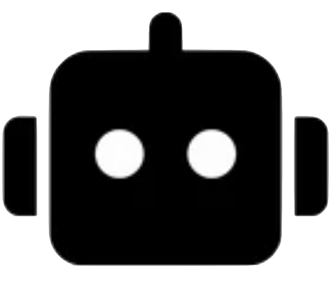
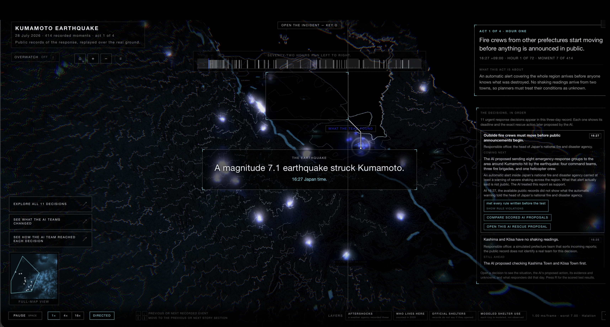
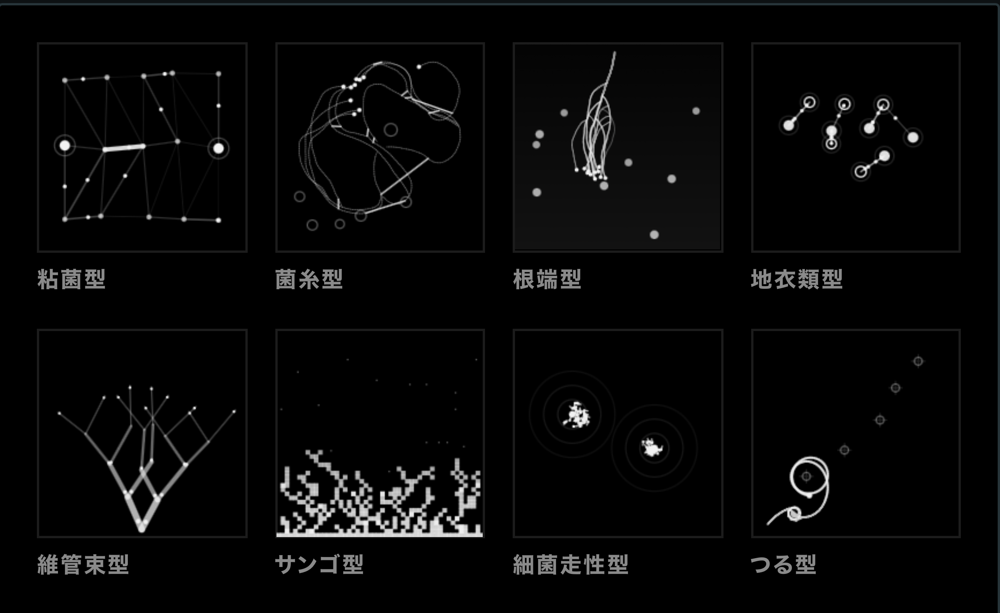

Q.
SpaceDataの「MAKE SPACE INTELLIGENT」が知能化するのは何か？
A.衛星コンステレーション、ドローン、地上センサー、現場チームが同時に動き、観測・優先順位・役割が刻々と変わる世界です。
STATEFUL COMPLEX ECOSYSTEMS — 状態が変化し続ける複雑な世界
SpaceDataの「MAKE SPACE INTELLIGENT」が知能化するのは何か？
A.衛星コンステレーション、ドローン、地上センサー、現場チームが同時に動き、観測・優先順位・役割が刻々と変わる世界です。
環境が変わらない単純なAIタスクと、状態を持つ複雑系は何が違うのか？
A.単純なタスクでは前提と正解条件がほぼ固定。複雑系では、センサー更新や一つの行動が、次の資源・制約・選択肢を書き換えます。
では、AIエージェントを複数つなげれば十分なのか？
A.接続はメッセージ経路にすぎません。前のAIが残した未完了の仕事を、将来の状態まで追い続ける仕組みにはなりません。
情報を履歴や会話に残せば、それで解決するのか？
A.いいえ。記録にあることと、いま判断するAIの入力へ正確に届くことは別です。SEE SLIDE 02 →
では、何を引き継ぐ必要があるのか？
A.情報ではなく、「誰が・いつ・どの証拠で・何をもって解決するか」という条件付き将来義務です。
RELAYSTATEは、それをどう実現するのか？
→検証済みの判断を〈意思決定引継書〉へ変換し、条件成立時に次のAI／人間へ届けます。
Intelligence that survives change / 変化を越えて生き残る知能

判断者 A伝達ゲームのように、重要な情報が途中で失われる。
Aの決定がEの入力に入らず、識別子・数量・証拠・未完了の仕事が抜け落ちる。引継書が圧縮の外を通り、Aの決定をEへ正確に届ける。
起点・判断義務・責任主体・証拠・発火条件・完了条件
AI提案・人員・派遣・成果は合成。実被害や実運用成果の再現ではありません。
各AIは、その時点までの情報だけを読みます。
有効な事前割当が後続AIの実行文脈へ届きませんでした。
Qwen3-32BとQwen3.5-122Bで、同じ判断依存を再検証。
接近警報の後も、予測位置・衝突確率・回避期限は更新されます。運用者、監視事業者、規制主体が順番に判断する複雑系です。
追跡情報を共有しても、「誰が・何を・いつまでに確認するか」は会話や担当交代で薄れます。ESAも、運用者間通信がad hocになり得ると説明しています。
既存の軌道計算は置き換えません。その出力からコードが引継書を作り、最新の追跡状態で再検証して、次のAIまたは運用者へ届けます。
衛星、ドローン、地上センサーを統合すると、道路・被害・資源が変わる多数の未来を試せます。一つのAI判断が次の分岐を変えます。
シナリオを分岐できても、「この状態なら、前の判断を誰が見直すか」は要約やエージェント交代を越えて自動では残りません。
既存のデジタルツインやAIエージェント基盤は置き換えません。各判断の後に引継書を生成し、条件が変わった時に次のAIへ再提示します。
前の判断・証拠・未知事項を、次のAIが必要とする瞬間に再提示します。
誰が・いつ・何を根拠に・何をもって終えるかを引継書に固定します。
LLM、デジタルツイン、軌道計算、指令権限を置換せず、判断イベントの後へ追加できます。
義務・証拠・発火条件をコードで管理し、必要な引継書だけを次のAIへ渡します。

生物の成長原理を、状況に応じて情報経路を変えるマルチエージェント構成へ。
意見の量ではなく、証拠・未知情報・資源・規則で、判断を検証する設計へ。
答えは、コード管理の〈意思決定引継書〉。生成・保持・再検証し、必要な時に次のAIへ届ける。
各AIは、その時点までに届いた情報だけを読む。
ランナーと決定論的ルール検証器はコードであり、AIエージェントには数えない。
正確な後続判断は両モデル8/8。安全性は8/8と7/8。誤終結は0。